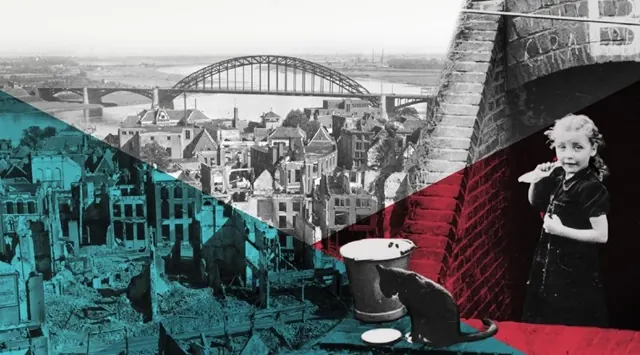

Nieuws ·
Esther Horsten aangesteld als nieuwe directeur van het Vrijheidsmuseum
Het bestuur van het Vrijheidsmuseum en Infocentrum WO2 Nijmegen heeft de benoeming van Esther Horsten-Theunissen als nieuwe directeur van het museum aangekondigd. Zij neemt vanaf 1 april het stokje over van de huidige directeur, Wiel Lenders, die met pensioen gaat.
De benoeming van Horsten is een belangrijke mijlpaal voor het museum, dat zich richt op het levend houden van de geschiedenis en de lessen van de Tweede Wereldoorlog. Bestuursvoorzitter Hans Verheijen uitte zijn enthousiasme over haar komst: “Esther Horsten is een perfecte match voor de ambitieuze toekomstplannen van ons museum. Met haar uitgebreide ervaring en deskundigheid zijn wij ervan overtuigd dat zij zal bijdragen aan de verdere groei en ontwikkeling van het museum.”
Esther Horsten, die een sterke band heeft met de regio Groesbeek – ze groeide op in de nabijheid van het museum – brengt een schat aan kennis en ervaring met zich mee. Ze is momenteel werkzaam bij Museumpark Orientalis als programma-manager, en vervult ook de rollen van zakelijk manager en projectmanager bij Stichting Smaakcentrum. Daarnaast adviseert ze Syntein, een regionale huisartsenorganisatie. Horsten studeerde aan de Hogere Hotelschool in Maastricht en heeft meerdere opleidingen in journalistiek gevolgd.
Over haar nieuwe rol zegt Horsten: “Het Vrijheidsmuseum speelt een cruciale rol in het vertellen van de regionale geschiedenis binnen een bredere context. De boodschap van het museum blijft uiterst relevant en ik ben enthousiast om bij te dragen aan het bereiken en inspireren van een nog groter publiek.”
Het bestuur en de ruim 150 vrijwilligers van het museum kijken uit naar de samenwerking met Esther Horsten, om de doelstellingen van het Infocentrum WO2 Nijmegen en het Vrijheidsmuseum in Groesbeek verder te verwezenlijken.

In de bedrijvengids: Vrijheidsmuseum